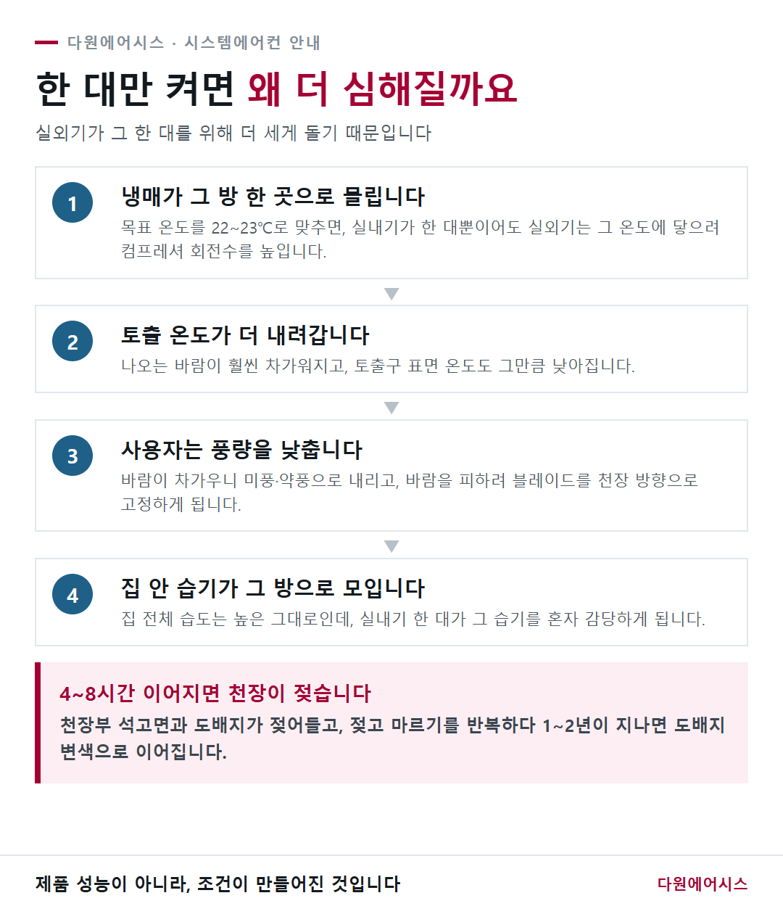
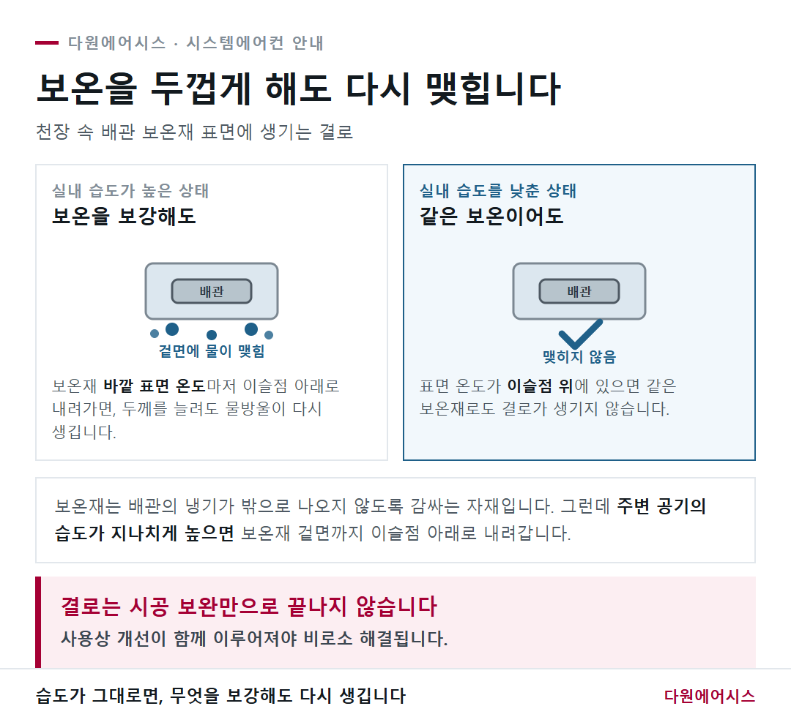
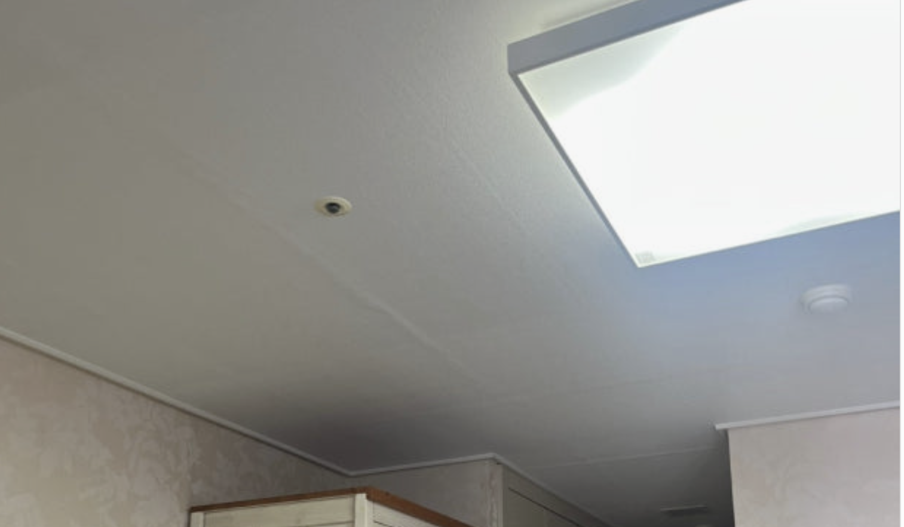
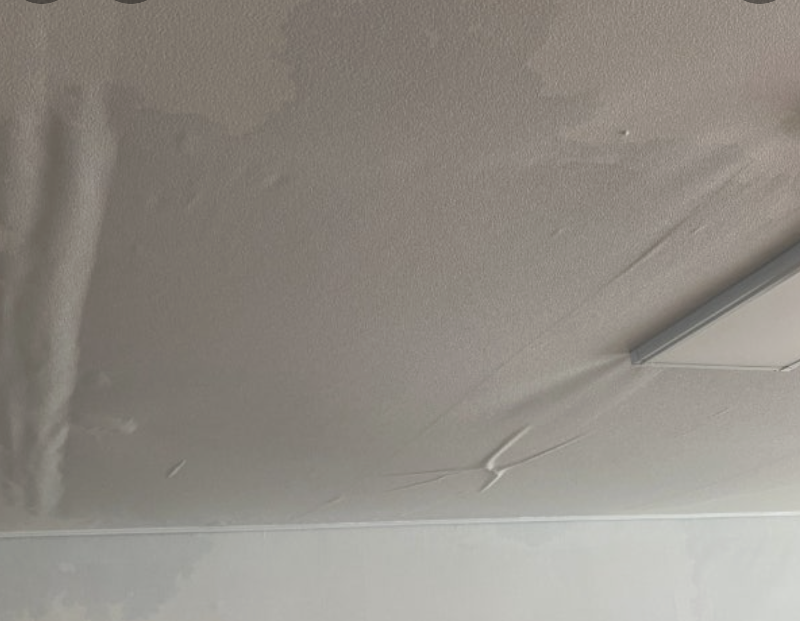

다원에어시스 · 시스템에어컨 사용 안내
토출구 물방울,시공 하자가 아닙니다
배관이나 배수에서 새는 물이 아니라, 실내 습도가 높을 때 차가운 표면에 맺히는 이슬입니다. 원인이 습도에 있기 때문에 사용 방법을 함께 바꾸지 않으면 해결되지 않습니다.
한 줄로 말하면
여름철 얼음물 컵과 같습니다
찬 컵 표면에
습기가 맺히듯
＝
차가워진 토출구에
실내 습기가 맺힘
컵 밖에 맺힌 물이 컵 안에서 새어 나온 게 아니듯, 토출구의 물방울도 에어컨 안에서 새는 물이 아닙니다.
새는 물이라면 맺히는 모양이 다릅니다. 한 지점에서 주르륵 흘러내리거나, 배관 라인을 따라 떨어집니다. 그런 경우는 마지막 장에 따로 정리해 두었습니다.
01왜 하필 그 방인가
습기가 만들어지고, 모이는 자리가 있습니다
결로 발생 위치의 95% 이상이 안방 또는 거실입니다. 그 방의 에어컨에 문제가 있어서가 아니라, 그 방이 집 안에서 습기가 모이는 자리이기 때문입니다.
안방
욕실 습기
샤워 후 습기가 문틈으로 새어 나와 방 전체 습도를 올립니다
거실
조리 습기
끓이고 삶을 때 수증기가 거실까지 퍼집니다
특히 욕실문을 활짝 열어둔 채 환풍기를 돌리면, 습기가 환풍기로 빠지는 것이 아니라 안방 전체로 퍼집니다. 그 습기가 집에서 가장 차가운 곳인 에어컨 토출부로 모여 물방울이 됩니다.
조리 습기도 마찬가지입니다. 조리 중은 물론 조리가 끝난 뒤에도 한동안 습도가 높게 유지됩니다.
02요즘 부쩍 늘어난 이유
기후와 사용 습관이 함께 바뀌었습니다
- 기후 변화 — 여름철 실내 온도와 습도 자체가 예전보다 높아졌습니다.
- 사용 패턴 변화 — 어린 자녀가 있거나 전기요금을 아끼려는 목적으로, 방 하나만 낮은 온도로 오래 켜두는 사용이 늘었습니다.
- 약풍·천장 고정 — 차가운 바람을 피하려고 풍량을 약풍으로 낮추고, 바람 방향을 천장 쪽으로 고정해 두는 경우가 많아졌습니다.
이 세 가지가 겹치면 물방울은 생길 수밖에 없습니다. 제품의 성능 문제가 아니라, 조건이 만들어지는 것입니다.
03한 대만 켜면 왜 더 심해질까요
실외기가 더 세게 돌기 때문입니다
한 대를 목표 온도 22~23℃로 맞추면, 실내기가 한 대뿐이어도 실외기는 그 온도에 도달하기 위해 컴프레셔 회전수를 높입니다. 그 방 한 곳으로 많은 냉매가 몰리게 됩니다.

한 대만 켜 두었을 때 물방울로 이어지는 과정
04배관 보온재 표면에도 생깁니다
사용 개선 없이는 해결이 어려운 이유
실내 습도가 높으면, 심한 경우 천장 속 배관 보온재 표면에까지 결로가 맺힙니다.
보온재는 배관의 냉기가 밖으로 나오지 않도록 감싸는 자재입니다. 그런데 주변 공기의 습도가 지나치게 높으면 보온재 바깥 표면 온도마저 이슬점 아래로 내려가, 겉면에 물이 맺힙니다. 이 상태에서는 보온을 아무리 두껍게 보강해도 습도가 그대로인 한 물방울이 다시 생깁니다.

보온 보강만으로 끝나지 않는 이유
그래서 결로는 시공 보완만으로 끝나지 않습니다. 사용상 개선이 함께 이루어져야 비로소 해결됩니다.
05이렇게 사용해 주세요
집 전체의 습도를 낮추는 방향이 핵심입니다
- 동시에 가동하는 실내기를 늘려 주세요거실과 방을 함께 켜면 집 전체 습도가 내려가고 결로가 확연히 줄어듭니다. 한 대에 몰리던 습기 부담이 분산됩니다.
- 목표 온도는 현재 온도보다 1~2℃만 낮게더우면 1℃ 더 낮추고, 추우면 1℃ 올리는 방식으로 조정하세요. 편차가 작게 유지되어야 절전에도 유리합니다.
- 더 시원해야 한다면, 한 대가 아니라 3~4대를 함께실내 전체 온도가 내려가면 습도도 함께 내려가 더 시원하게 느껴집니다. 공간 사이의 열손실이 줄어 실외기 가동률은 오히려 낮아집니다.
- 풍량은 강하게, 목표 온도는 1~2℃ 높게풍량이 많아지면 실내 전체가 순환하며 습도가 내려갑니다. 이 조합이 결로를 가장 줄여 줍니다.
- 바람 방향을 천장에 고정하지 마세요찬 기운이 한곳에 몰리면 그 부위에만 이슬이 맺힙니다. 스윙 또는 넓게 퍼지는 방향으로 두세요.
- 화장실 문은 거의 닫고, 환풍기는 24시간안방 화장실과 공용 화장실 모두 해당합니다. 문을 닫아야 습기가 환풍기로 빠져나갑니다.
- 주방 환기팬은 조리 후에도 10분 이상조리 중 발생한 수증기는 조리가 끝난 뒤에도 한동안 실내에 남아 있습니다.
- 제습기를 함께 쓰시면 확실히 줄어듭니다온·습도계를 한 대 두시면 지금 우리집 상태를 바로 확인하실 수 있습니다.
실내 습도 50% 선
토출부에 결로가 생기지 않는 기준입니다. 사람도 이 구간에서 가장 쾌적합니다.
06전기요금이 걱정되실 텐데요
생각보다 차이가 크지 않습니다
2~3대를 현재 온도보다 1~2℃ 낮게 맞춰 전체적으로 사용하는 것과, 특정 방 한 곳만 낮은 온도로 사용하는 것 사이에 전기 사용량은 큰 차이를 보이지 않습니다.
한 대만 낮은 온도로 돌리면 실외기가 그 온도에 도달하려고 계속 무리하게 돌지만, 여러 대를 완만한 온도로 돌리면 실외기가 일정하게 안정적으로 돕니다. 오히려 후자 쪽이 실외기 가동률이 낮아지는 경우도 많습니다.
07습도를 낮추면 이런 점이 좋습니다
물방울이 멎는 것 말고도
- 잠자리가 달라집니다 — 이불에 스며든 습기가 제거되면서 수면이 훨씬 쾌적해집니다. 호텔에서 두꺼운 이불을 덮고도 느껴지는 그 쾌적함이 여기서 나옵니다.
- 실외기가 안정적으로 돕니다 — 실내 온도가 일정하게 유지되면 실외기도 일정하게 가동됩니다.
- 마감재가 오래갑니다 — 천장·벽지·가구에 곰팡이가 생기는 조건 자체가 사라집니다.
08우리집 습도, 이렇게 확인해 보세요
천장 도배지가 알려 줍니다
천장을 올려다봤을 때 석고보드 이음매 부분의 도배지가 부풀어 오른 듯한 경계면이 여러 군데 보인다면, 우리집 습도가 높을 수 있다는 신호입니다.

이음매를 따라 경계면이 드러난 상태 — 습도가 높다는 신호입니다
여기에 온·습도계를 하나 두시면 확실합니다. 60%를 넘나든다면 위 사용 방법을 적용해 보시고, 50% 선까지 내려가는지 확인해 보세요.
09이건 저희가 봅니다
아래에 해당하면 연락 주세요
- 실내기 공기 흡입구(필터 쪽) 한쪽에서 물이 주르륵 흘러내릴 때
- 제품 가동을 멈추고 나서 물이 주르륵 흐를 때
- 제품을 가동하는 중에 천장이 전체적으로 젖어 들어갈 때

천장이 전체적으로 젖어 들어간 상태
이 경우는 가동을 멈추고 연락 주세요.